我是一位機構工程師。機構設計是我的本職，而讓我與眾不同的，是能把一個設計從研發、原型，一路落地到量產。
我的三段經歷是層層累積的。在北科大，我擔任研發計畫總負責人，角色橫跨機器人研發與商業開發——一邊做機器人 RD、原型機與專利，一邊做商業規劃、市場與合作對象開發，奠定了「工程 + 商業」的複合底子。
接著在鴻華先進開發純電 SUV 外裝零件（Model C / LUXGEN n7、Cariva），管理 6–7 家供應商，學會了量產導入、系統管理與供應鏈——把「做得出原型」升級成「能穩定量產」。
現在在機器人新創 Anvil Robotics 擔任創始工程師，前面兩段的能力第一次合流：我用北科大的研發能力做產品開發，用鴻華的量產與供應鏈經驗把它落地，並在這裡真正開始建立與帶領團隊（面試、帶實習與正職）。
在硬技術上，我熟悉從設計到製造的完整流程：3D／2D 機構設計、CNC 加工、鈑金、塑膠射出模具、3D 列印，以及原型製作與測試驗證。這讓我能把一個設計，從桌上的原型推進到能穩定、可規模化製造的產品。
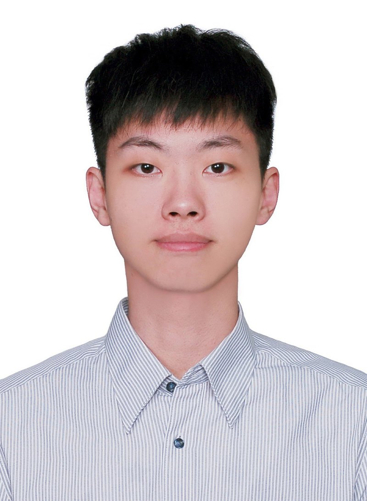
作為創始工程師，整合北科大的機器人研發經驗與鴻華的量產、供應鏈經驗，把產品從研發原型帶到穩定量產，並在此建立與帶領團隊。
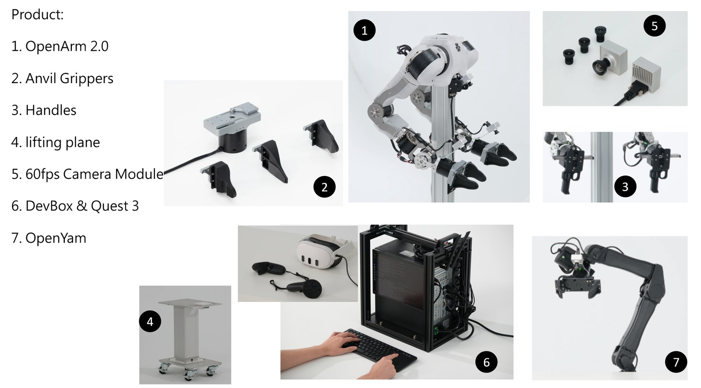
Physical AI 的軟硬體平台，提供 ready-to-go devkits，讓團隊 Day 1 即可蒐集資料、訓練與部署模型。
身為創始工程師，我負責整條產品線的硬體優化與量產化：從 OpenArm 雙臂系統、OpenYAM、夾爪，到 60fps 相機模組與 Devbox。
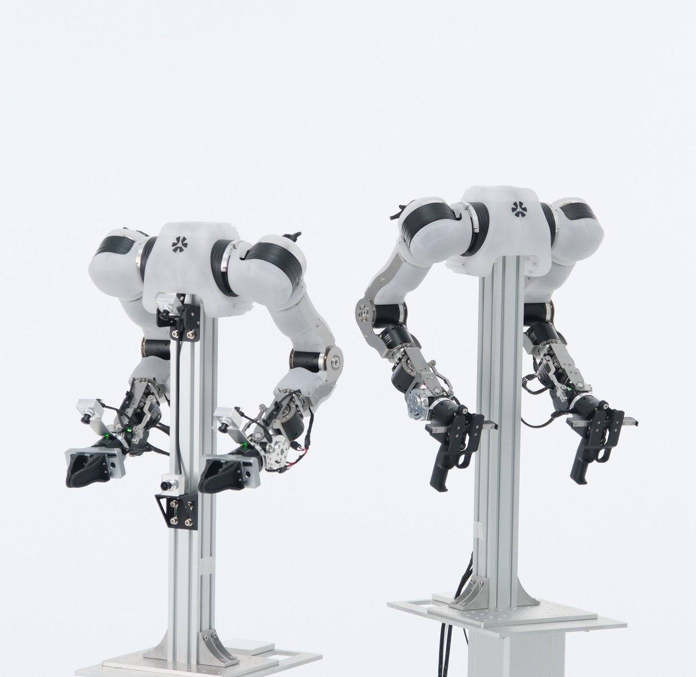
Anvil 雙臂機器人系統，含夾爪與相機模組，資料蒐集用的整套硬體平台。
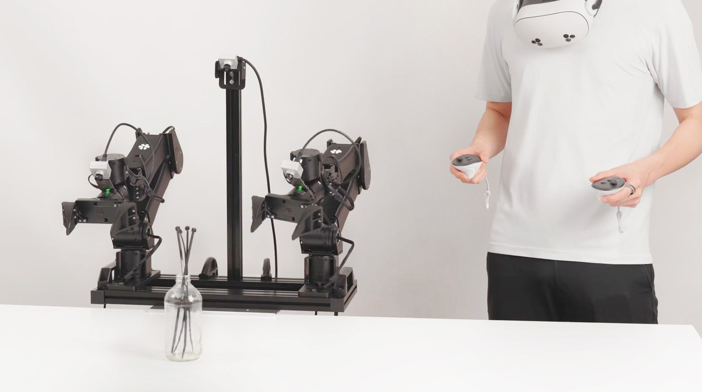
Anvil 機器人平台，搭配 Quest 遙操作，支援高精度資料蒐集與遠端控制。
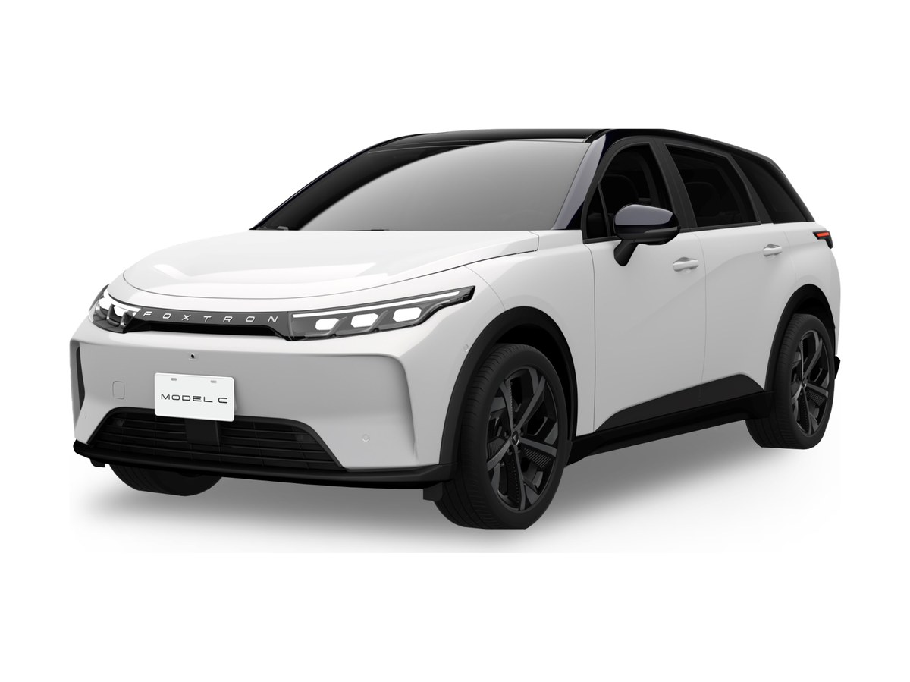
純電 SUV 外裝零件：擾流板、背門飾板、輪弧、下護板等，從設計到量產全程參與。
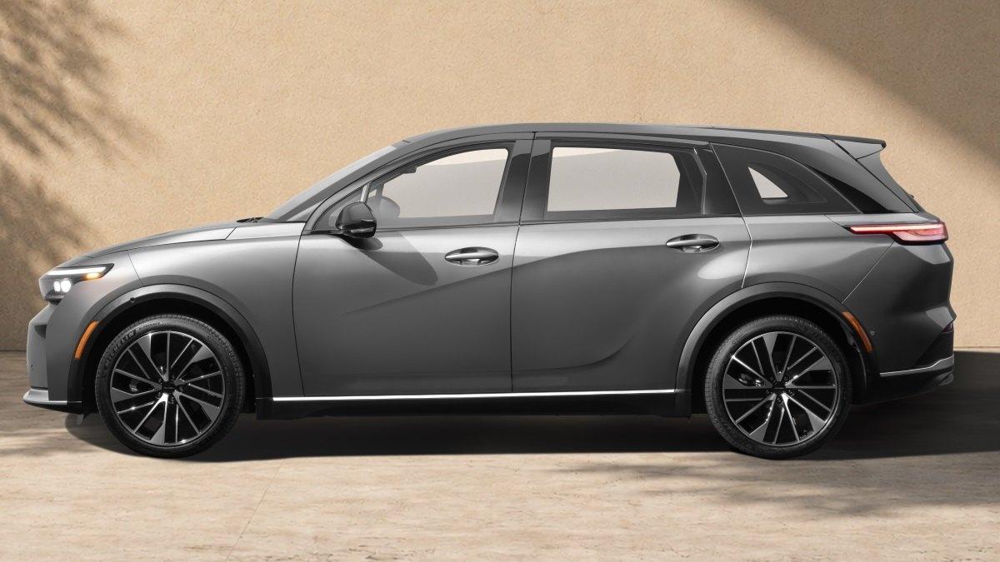
衍生車型外裝零件開發，管理供應商並協調設計變更下的量產導入；主導尾翼空力優化專案。
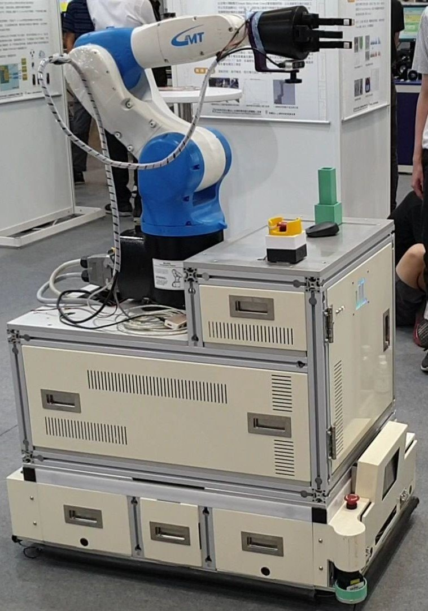
創新輪轂伺服馬達之移動機器人，結合機械手臂的自走平台，機構設計負責人。
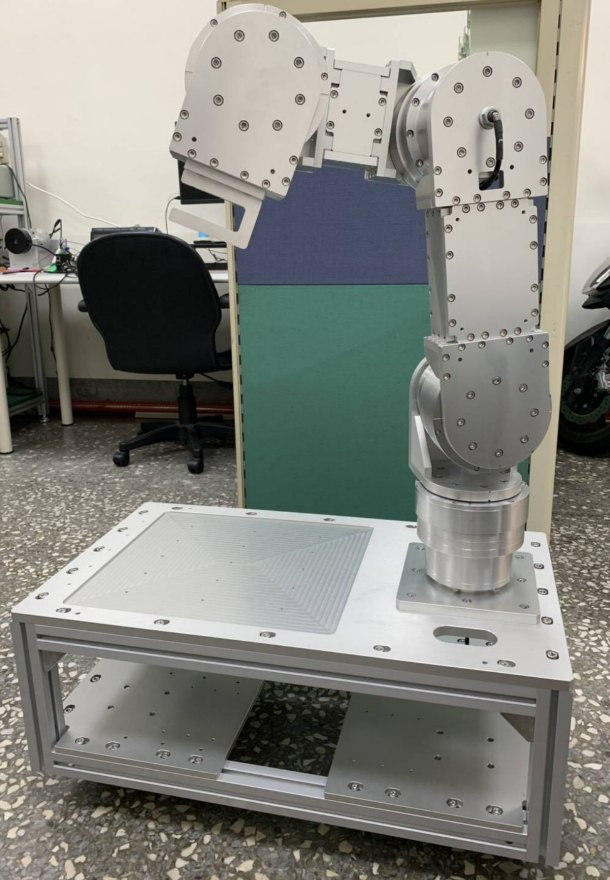
以搭載於 AIV 自走車為目標，14KG 負載下縮小體型，採擺線減速機構結合輪轂馬達。
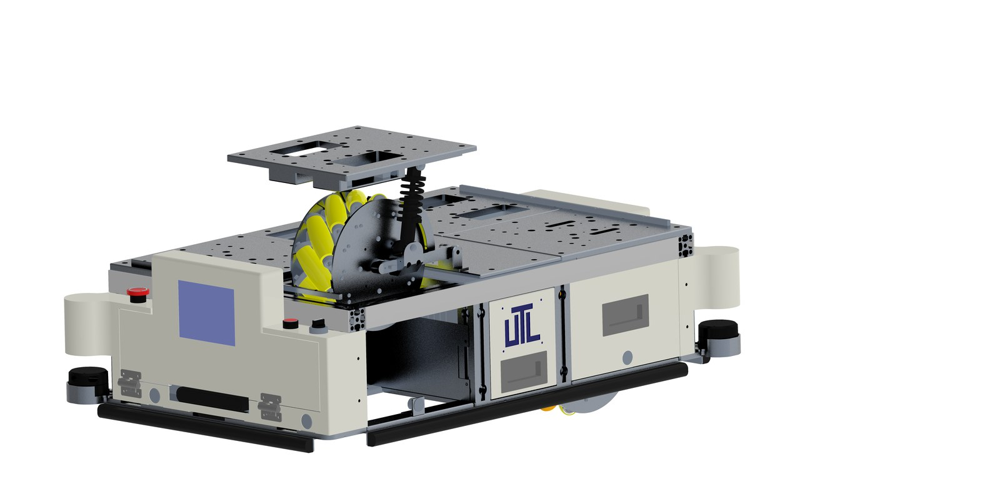
磁性編碼器嵌合輪轂馬達、萬向輪自走車體，無軌自走平台設計。
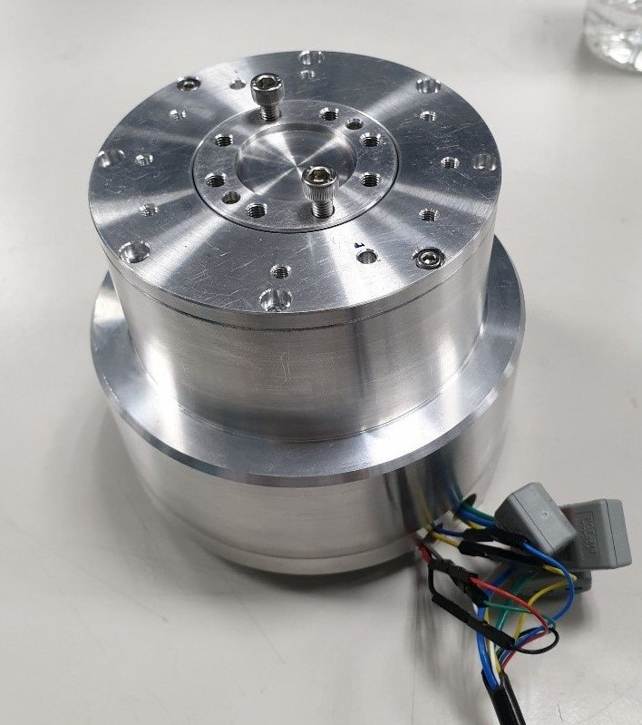
整合外轉子馬達、二階行星減速機構、編碼器與驅動器，體積小、扭力大。
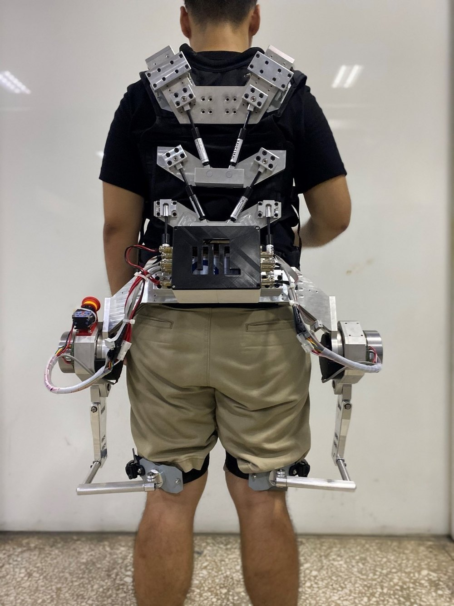
可抱起人體的高負載動力外骨骼，降低照護者腰椎負荷；從 3D 設計到實體打樣。
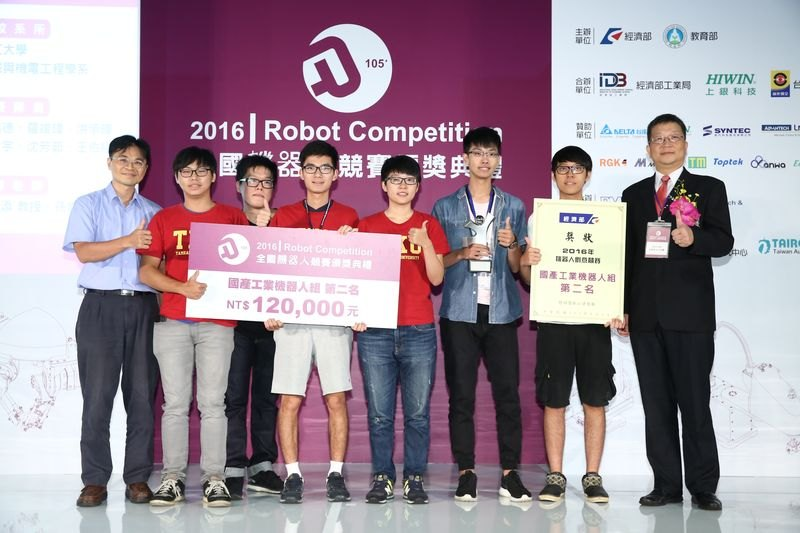
堆垛機械手臂與 SCARA 機械手臂，兩屆全國機器人創意競賽國產組第二名。
對產品開發、機器人系統或機構設計的合作有興趣？歡迎直接聯絡我。